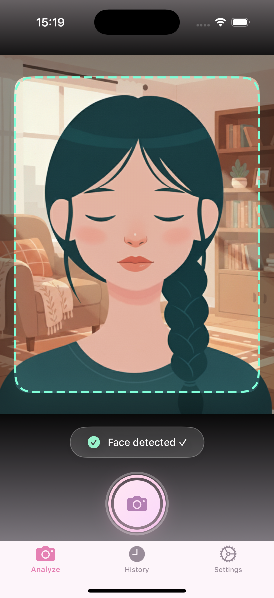
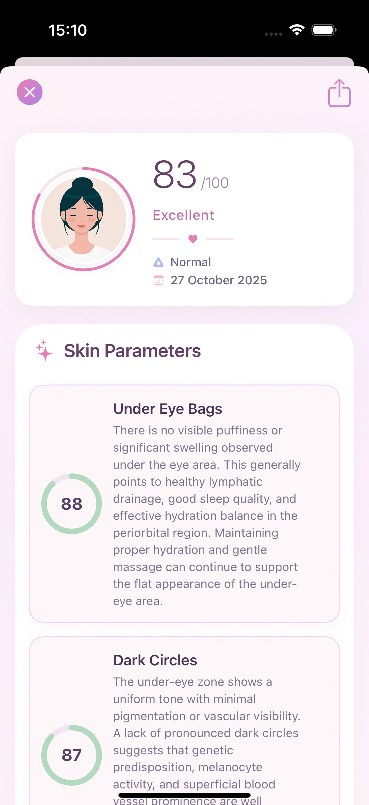
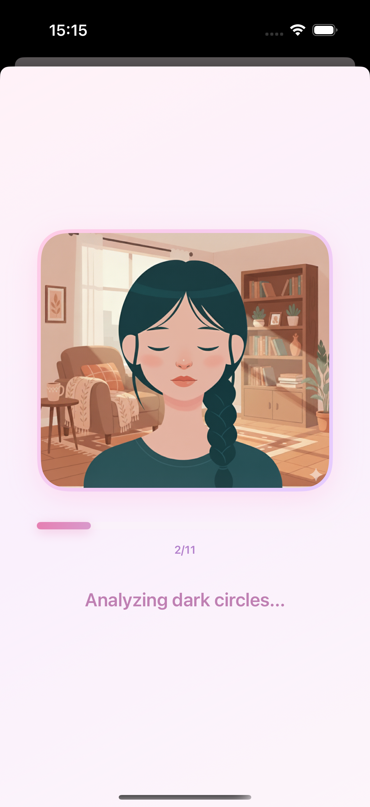
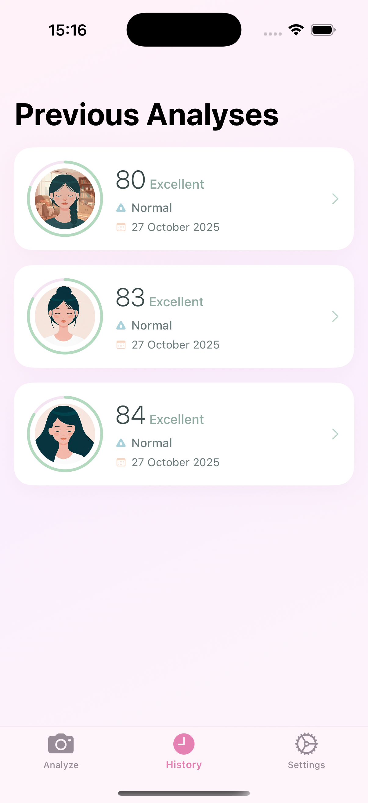

Smart capture
Guided face framing helps users start the scan with confidence.
Scan your face, watch the AI analyze key skin concerns, review a polished scorecard, and track your past analyses in one soft, premium mobile experience.


Users can capture, analyze, review their results, and revisit previous reports without leaving the same elegant mobile flow.
This app provides general cosmetic and skincare information for educational purposes only. It does not provide medical diagnosis, treatment, or professional dermatological advice, is not a medical device, and should not be used to diagnose or treat any skin condition. Always consult a qualified dermatologist or physician for any skin health concerns or before making medical decisions.
The homepage now shows the real product flow with visual screens first, so it feels much closer to an App Store landing page.
Guided face framing helps users start the scan with confidence.

Soft progress feedback keeps the experience feeling premium and active.
Skin score and parameter cards turn each scan into a useful beauty snapshot.

Previous analyses stay visible so users can revisit and compare their journey.
Short, visual, and confidence-building. The experience is designed to feel useful from the first tap.
Open the app, take a guided photo, and move straight into analysis.
Review visible concerns in a softer, easier-to-read format instead of dense reports.
Use saved results and repeated scans to track progress over time.
Quick to understand, visual on first glance, and designed to sell the mobile experience immediately.
Start with the analyzer screen and frame your selfie inside the guided outline.
FaceGlow checks visible skin signals and builds a clean, premium analysis flow.
See the overall score, individual parameters, and a more polished beauty summary.
Revisit earlier analyses to compare changes and keep your routine on track.